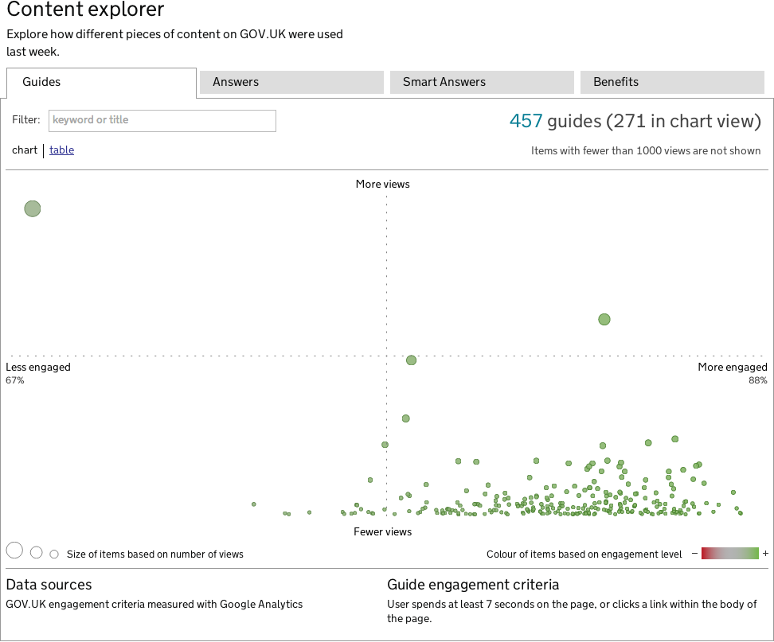

GOV.UK performance Departments and policy
Departments and policy content had 1.47 million visitors last week, an increase of 10% from the week before
Web traffic

Weekly unique visitors
Unique visitors per week to departments and policy
Source: Google Analytics
| Date | Graph commentary |
|---|---|
| 17 April 2013 | DWP transitions to Inside Government |
| 23 April 2013 | DfE transitions to Inside Government |
| 25 April 2013 | HM Treasury transitions to Inside Government |
| 26 April 2013 | UK Export Finance transitions to Inside Government |
| 30 April 2013 | No 10 and the DPM move to GOV.UK |
Content
Top policies last week
Top 10 most viewed policies on GOV.UK
| Policy | Views | Policy | Views | ||
|---|---|---|---|---|---|
| 1. |
Helping people to buy a home
DCLG
- Updated 8 October 2013
|
31.7k | 6. |
Making the State Pension simpler and fairer
DWP
- Updated 8 August 2013
|
3.98k |
| 2. |
Simplifying the welfare system and making sure work pays
DWP
- Updated 13 September 2013
|
11.1k | 7. |
Reducing obesity and improving diet
DH
- Updated 25 March 2013
|
3.73k |
| 3. |
Increasing the use of low-carbon technologies
DFT
- Updated 20 September 2013
|
8.03k | 8. |
Helping households to cut their energy bills
DCLG
- Updated 8 October 2013
|
3.59k |
| 4. |
Improving the quality and range of education and childcare from birth to 5 years
DfE
- Updated 27 September 2013
|
6.46k | 9. |
Providing effective building regulations so that new and altered buildings are safe, accessible and efficient
DCLG
- Updated 20 August 2013
|
3.58k |
| 5. |
Helping people to find and stay in work
DWP
- Updated 8 August 2013
|
5.20k | 10. |
Ensuring the future of the universal postal service and Post Office network services
BIS
- Updated 7 October 2013
|
3.44k |
Source: Google Analytics
